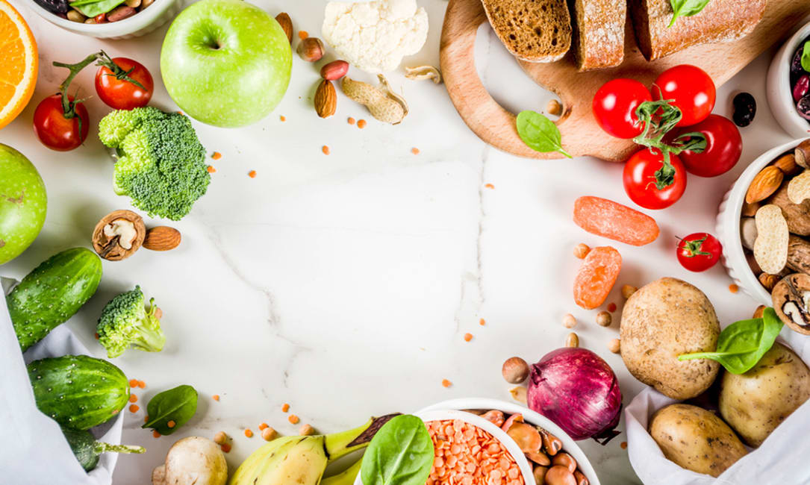

참치김치찌개

재료 : 돼지고기앞다리살, 김치, 대파, 된장, 쌀뜨물
양념: 맛술, 고춧가루, 다진마늘, 간장
1. 돼지고기는 맛술1스푼 살짝
2. 대파도 준비하고 김치도 쫑쫑 썰기
3. 냄비에 쌀뜨물을 올리고 물이 끓으면 돼지고기 부터 투하
4. 된장 반 스푼 넣고 (이것이 신의 한수인것 같다.)
5. 거품같은 것이 올라오면 최대한 건져내고
6. 쫑쫑 썰어둔 김치를 넣고 고추가루 1스푼 ~ 2스푼
7. 다진마늘도 1스푼넣고 간장도 1스푼넣고 끓이다가 대파 올려서 마무리